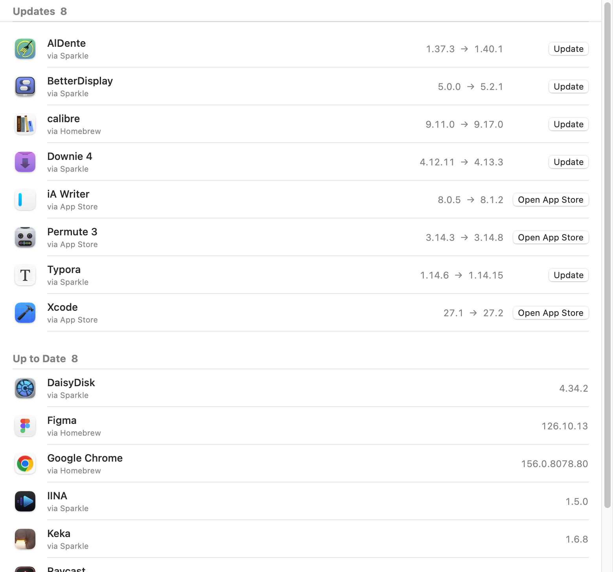

Free app updater for Mac · The successor to MacUpdater
Every app.
Up to date.
Uptick finds updates for the apps you already have, checks every download, and installs it in one click.

What is Uptick?
Uptick is a free, open-source app updater for Mac. It reads the version of every app in your Applications folder, asks each app’s own update channel for the latest release, and lists what is out of date. Press Update and Uptick downloads the new version, checks that it is the same app from the same developer with a valid signature, and swaps it in. The old copy goes to the Trash. It is a native SwiftUI app for Apple silicon and Intel, and a successor to MacUpdater, which stopped development in January 2026.
Checked before it’s installed.
An updater replaces your apps. It should be careful.
Same app, same developer.
Every download must carry the installed app’s bundle ID, its developer’s team ID and a valid signature. Otherwise Uptick stops.
Old version in the Trash.
Uptick never deletes. If copying the new version fails, it puts the old one back.
Fewer false alarms.
When a source numbers versions differently from the app, Uptick says so. Verify reads the real version once and remembers it.
Four sources. No Uptick server.
Version numbers come straight from each app’s own update channel.
Mac App Store
Apple’s lookup service, using the Mac record rather than the iPhone one. The App Store installs the update.
Sparkle
The appcast most independent Mac apps publish, compared by build number exactly as Sparkle does.
Electron
The update feed Electron apps declare inside their bundle, picking the download for your Mac’s chip.
Homebrew Cask
Homebrew’s public list of over 7,000 apps, for everything else. No Homebrew install needed.
Knows when to relaunch
Apps like Chrome update themselves on disk. Uptick notices when the running copy is older and offers a relaunch.
Also on the command line
The same engine as a CLI: list updates, verify one, or install it from Terminal.
Uptick vs Latest and MacUpdater
MacUpdater has stopped. Latest is free, but its last stable release was in June 2025. Uptick is free, open and active.
| Uptick | Latest | MacUpdater | |
|---|---|---|---|
| Price | Free · GPL-3.0 | Free · GPL-3.0 | Paid |
| Status | Active | Last stable release 0.11, June 2025; 0.12 beta, February 2026 | Development stopped, January 2026 |
| Update sources | App Store, Sparkle, Electron, Homebrew | App Store, Sparkle, Homebrew | Its own database |
| Checks downloads before installing | Bundle ID, team ID, signature | Not stated | Not stated |
| Command line | Yes | Requested, not built | Not stated |
Checked on 30 October 2026 against the Latest repository and releases and TidBITS on MacUpdater’s shutdown.
Install
Uptick isn’t notarized by Apple. The one-line install avoids the warning.
One line in Terminal
curl -fsSL https://raw.githubusercontent.com/chengffei/uptick/main/install.sh | bash
The script downloads the latest release, checks its checksum, signature, bundle ID and developer, then puts Uptick in Applications and opens it.
Or the disk image
Download Uptick-0.2.0.dmg and drag Uptick into Applications.
On first launch, close the warning, then click Open Anyway in System Settings › Privacy & Security.
Requires macOS 14 or later. After that, Uptick updates itself.
Build from source
Xcode 26 or later. One script builds, signs and opens the app.
git clone https://github.com/chengffei/uptick.git cd uptick scripts/bundle.sh --open
FAQ
Common questions about Uptick.
Is Uptick a replacement for MacUpdater?
Yes. MacUpdater stopped development in January 2026. Uptick does the same job: it lists which of your apps have updates and installs them. It is free and open source.
Where does Uptick get version information?
From each app’s own update channel: Apple’s App Store lookup, the app’s Sparkle feed, its Electron update feed, or Homebrew’s public cask list. There is no Uptick server.
Does Uptick collect any data?
No. There is no account and no telemetry. Uptick only asks the update sources above for version numbers, downloads the updates you choose, and checks GitHub for new versions of itself.
Why do App Store apps open the App Store?
Recent macOS versions no longer let other apps install App Store updates, so Uptick opens the app’s page and the App Store does the update.
What does Needs a Look mean?
The source numbers versions differently from the app, so Uptick is not sure the comparison is right. Verify downloads the update, reads its real version, and remembers it.
Why does macOS say it can’t verify the developer?
Uptick is signed but not notarized by Apple. Install with the one-line command to avoid the prompt, or open the disk image version once and click Open Anyway in System Settings › Privacy & Security.